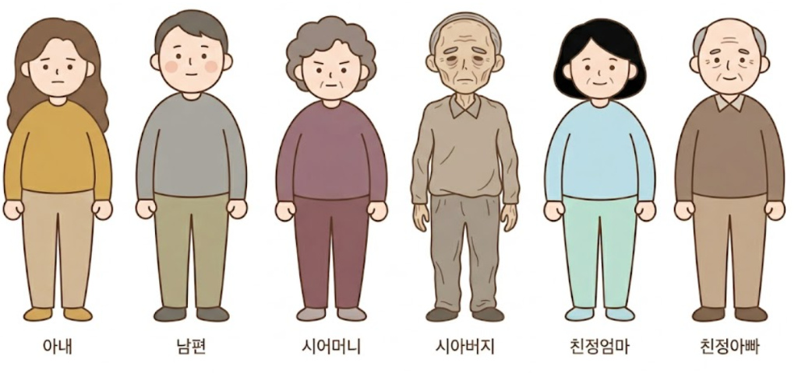

결혼 10년 차, 아이 없는 부부를 향한 시댁의 임신 압박과 그 이면을 담담하게 풀어가는 10컷 인스타툰
구성: 슬라이드 10장, 각 장 안에 2~3개 장면을 세로로 적층(벤치마크식) / 플랫 저채도 화풍 / 텍스트는 그림과 분리해 합성
ep01/prompts.md (10장 일괄 전송용). 결과는 C:\project\insta_toon\ep01\01.png ~ 10.png 로 저장(v1은 backup_v1 보관).
아래 한 덩어리를 그대로 이미지 생성기에 전달하세요. 캐릭터 시트(.agents/character_sheet.png)도 참조 이미지로 함께 첨부하면 일관성이 올라갑니다.